Great wall of China - China
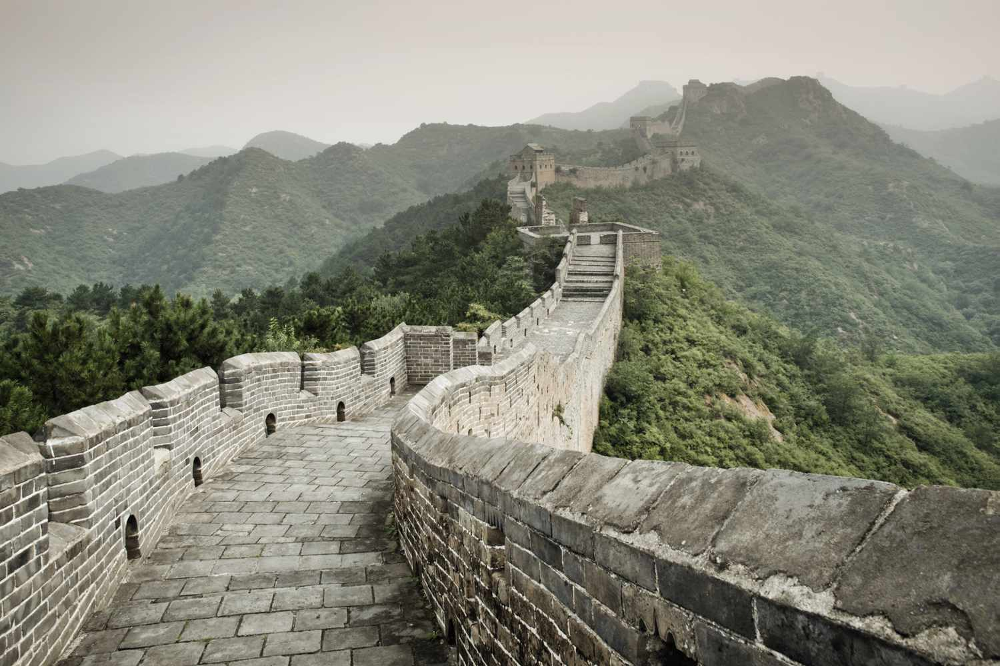
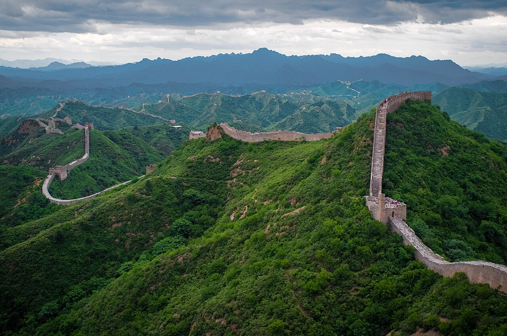
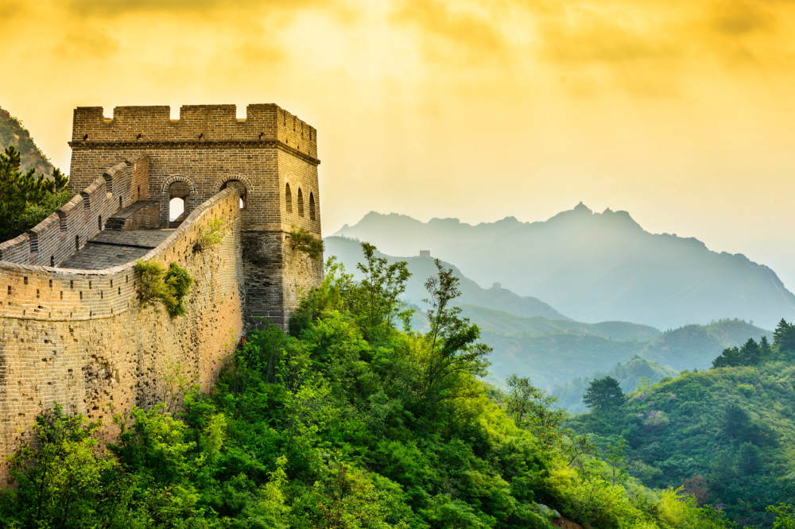
The Great Wall of China is one of the largest and most remarkable man-made structures in history, built across northern China to protect ancient Chinese kingdoms from invasions and r aids by nomadic tribes. Construction of the wall began as early as the 7th century BC, and diffe rent dynasties, especially the Qin, Han, and Ming dynasties, expanded and strengthened it over m any centuries. The wall stretches over 21,000 kilometers and was built using materials like sto ne, brick, wood, and tamped earth, depending on the region. It is not a single continuous wall but a series of walls, watchtowers, forts, and beacon towers used for military defense, communic ation, and border control. Soldiers used smoke and fire signals to send messages quickly along t he wall. Beyond its military purpose, the Great Wall became a symbol of China’s strength, unity, and advanced engineering skills. Today, the Great Wall of China is a UNESCO World Heritage Site and one of the New Seven Wonders of the World, attracting millions of visitors every year.
Petra - Jordan
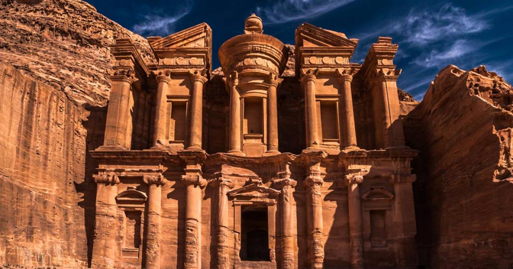
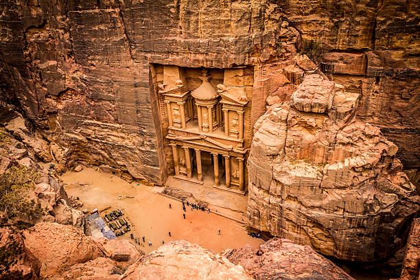
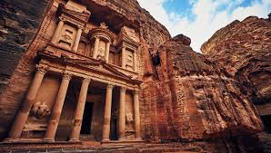
Petra located in southern Jordan, is an ancient archaeological city famous for its stunning rock -cut architecture and advanced engineering. Established as early as the 4th century BC, Petra was the capital of the Nabataean Kingdom and became a major trading hub connecting Arabia, Egypt, and th e Mediterranean regions. The city is carved directly into rose-red sandstone cliffs, which is why it is often called the “Rose City.” One of its most iconic structures is Al-Khazneh (The Treasury), a magnificent façade carved into a rock face. The Nabataeans were highly skilled in water management, creating an advanced system of channels, dams, and reservoirs to store and supply water in the desert environment. Petra thrived due to its strategic location on important trade routes but gradually declined after changes in trade paths and natural disasters like earthquakes. Rediscovered in 1812 by Swiss explorer Johann Ludwig Burckhardt, Petra is now a UNESCO World Heritage Site and one of the New Seven Wonders of the World, admired for its historical importance, unique architecture, and cultural heritage.
Christ the Redeemer – Brazil
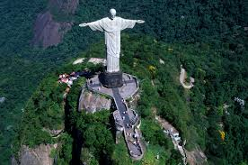
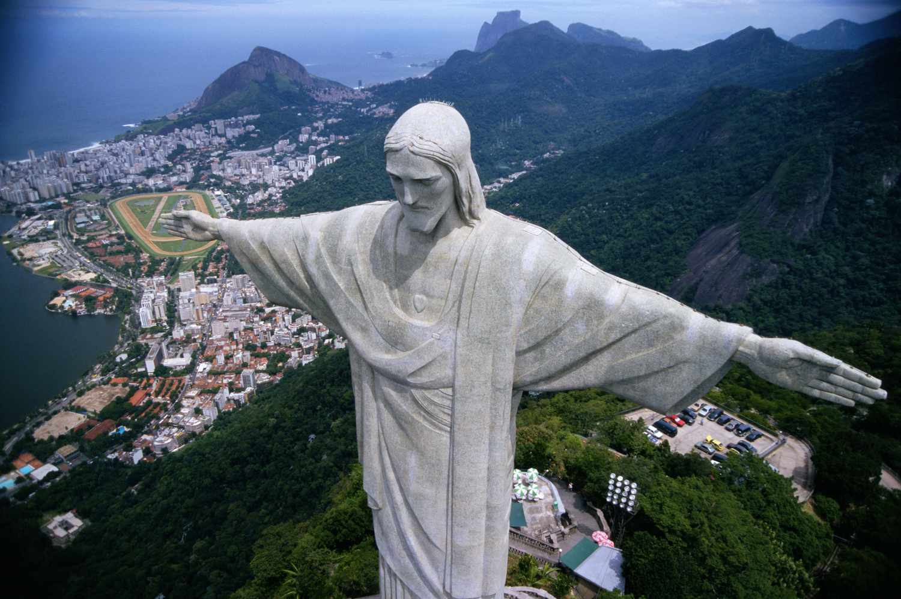
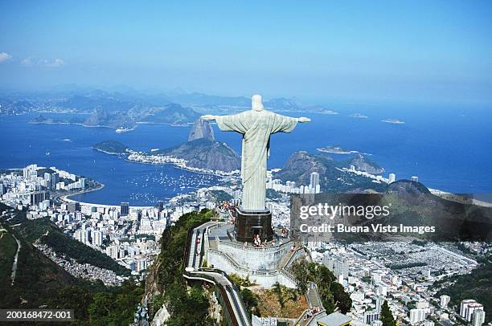
Christ the Redeemer is a famous statue of Jesus Christ located at the top of Mount Corcovado in Rio de Janeiro, Brazil. It was completed in 1931 and stands about 30 meters (98 feet) tall, with arms stretching 28 meters wide, symbolizing peace and welcome to all people. The statue was designed by Brazilian engineer Heitor da Silva Costa and created by French sculptor Paul Landowski, using reinforced concrete and soapstone, which makes it durable against weather. Built as a symbol of Christianity and faith, the monument overlooks the city and has become a cultural icon of Brazil. It is also one of the New Seven Wonders of the World and attracts millions of tourists every year. From the top, visitors can see breathtaking views of Rio de Janeiro, including beaches, mountains, and the city skyline, making it both a religious and tourist landmark of great global importance.
Machu Picchu – Peru
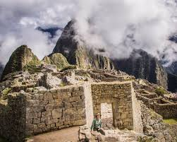
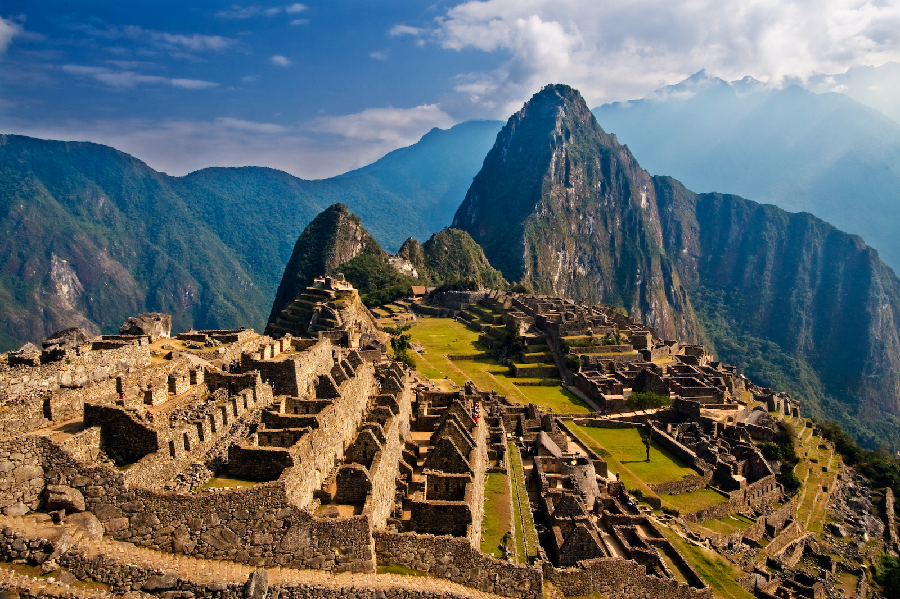
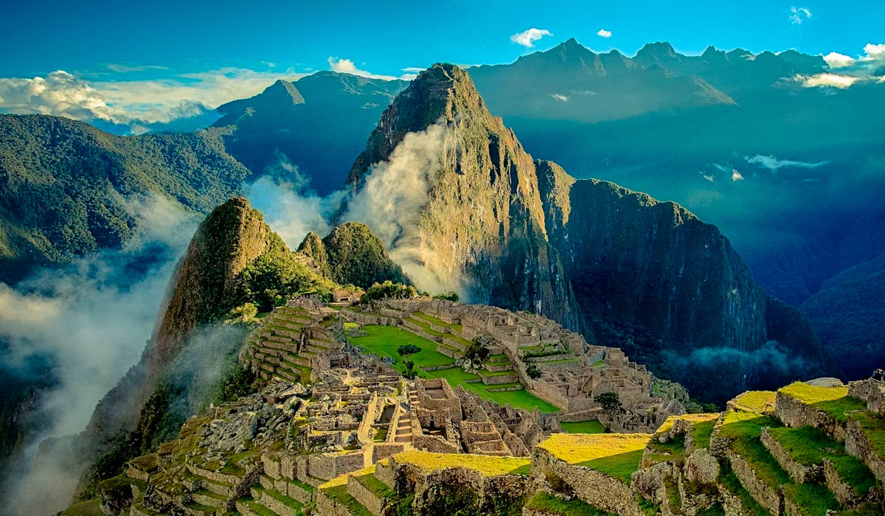
Machu Picchu is an ancient Incan city located high in the Andes Mountains of Peru, about 2,430 meters (7,970 feet) above sea level. It was built in the 15th century during the reign of the Inca emperor Pachacuti and is believed to have served as a royal estate or sacred religious site. The city is made of precisely cut stone structures, temples, te rraces, and plazas, all constructed without the use of mortar, showing the advanced skills of the Inca civilization. Surrounded by lush green mountains and clouds, Picchu remained hidden from the outside world for centuries until it was rediscovered in 1911 by American historian Hiram Bingham. The Incas also developed an advanced draina ge and agricultural terrace system to prevent landslides and support farming on the steep s lopes. Today, Machu Picchu is a UNESCO World Heritage Site and one of the New Seven Wonders of the World, admired for its historical significance, architectural brilliance, and breat htaking natural setting.
Chichen Itza – Mexico
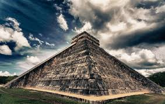
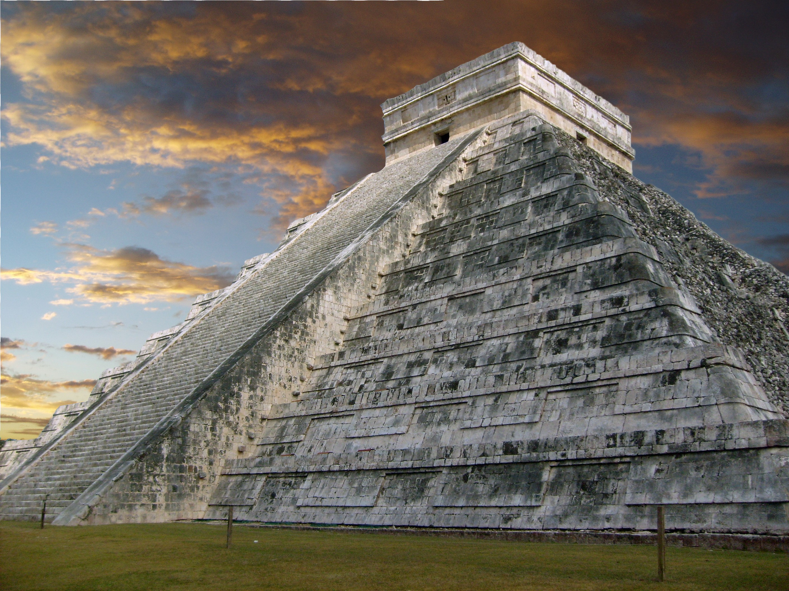
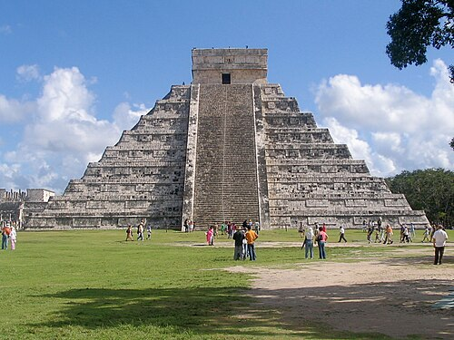
Chichén Itzá is a famous ancient Mayan city located in the Yucatán Peninsula of Mexico. It was one of the largest and most powerful cities of the Maya civilization between the 7th and 10th centuries AD . The site is best known for its iconic pyramid called El Castillo (Temple of Kukulcán), which was as a temple dedicated to the feathered serpent god Kukulcán. The pyramid is designed with precise astro nomical alignment, and during the spring and autumn equinoxes, a shadow appears on the steps that looks like a serpent moving down the pyramid. Chichén Itzá also includes other important structures such as the Great Ball Court, temples, and observatories, showing the Mayans’ advanced knowledge of architectu re, mathematics, and astronomy. Today, it is a UNESCO World Heritage Site and one of the New Seven Won ders of the World, attracting millions of visitors each year for its historical, cultural, and scientific importance.
Colosseum – Italy

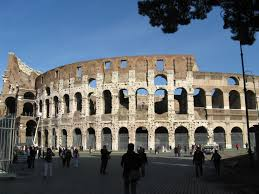
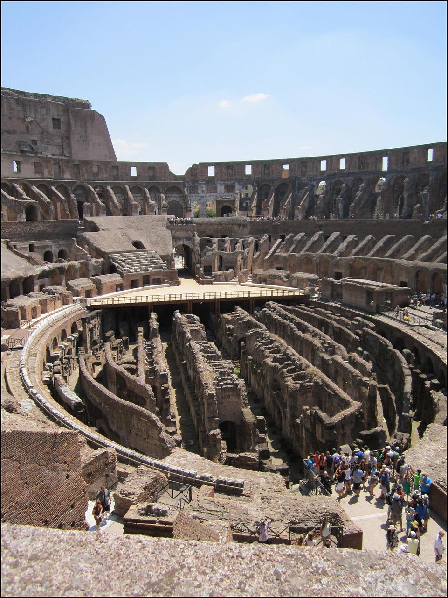
Colosseum is a massive ancient amphitheater located in the center of Rome , Italy, and is one of the greatest architectural achievements of the Roman Empire. It was built between AD 70 and 80 under the emperors Vespasian and Titus and could hold around 50,000 to 65,000 spectators. The Colosseum was mainly used for public spectacles such as gladiator fights, animal hunts, mock naval battles, and drama tic performances that entertained Roman citizens. Constructed using concrete, stone, and sand, it features a complex system of underground tunnels and chambers called the hypogeum, where gladiators and animals were kept before contests. Its advanced design included seating arrangements based on social class and a retractable awning system (velarium) to protect spectators from the sun. Over time, earthquakes and stone robbers damaged parts of the structure, but it still stands as a powerful symbol of ancient Roman engineering, culture, and entertainment. Today, the Colosseum is a UNESCO World Heritage Site and one of the New Seven Wonders of the World, attracting millions of tourists every year.
Taj Mahal – India

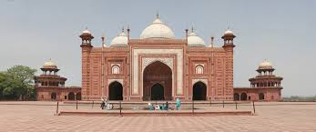
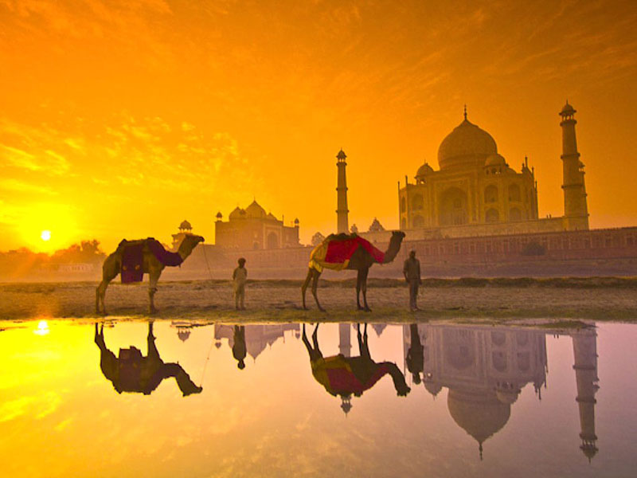
Taj Mahal is a magnificent white marble mausoleum located in Agra, India, built by the Mughal emperor Shah Jahan in memory of his beloved wife Mumtaz Mahal. Construction began in 1632 and was completed around 1653, involving thousands of artisans, architects, and craftsmen from across Asia. The monument is made of pure white marble decorated with intricate carvings, precious stones, and beautiful calligraphy, reflecting the finest example of Mughal architecture, which combines Persian, Islamic, and Indian styles. The Taj Mahal is perfectly s ymmetrical, with a grand dome, four minarets, lush gardens, and a reflecting pool that enhances its beauty. It also features advanced engineering techniques, including a strong foundation and pr ecise alignment to maintain its structure over centuries. Recognized as a UNESCO World Heritage Sit e and one of the New Seven Wonders of the World, the Taj Mahal is a global symbol of love, architectur al brilliance, and India’s rich cultural heritage, attract ing millions of visitors from around the world every year.